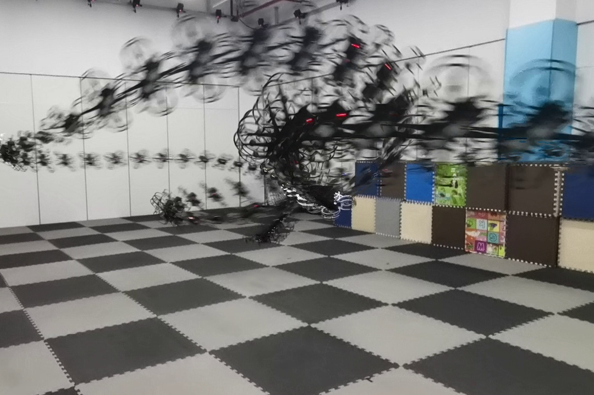

I am currently a master's student at School of Aeronautic Science and Engineering, Beihang University,
Beijing, China, supervised by Prof. Kexin Guo,
Prof. Xiang Yu and
Prof. Lei Guo.
I received my B.Eng. degree in material science and engineering from Northwestern Polytechnical
University, Xi'an, China, in 2023.
My research interest lies in the area of learning and robotics.
Recently, I have been working on meta-learning for control under disturbances.
I am looking forward to exploring reinforcement learning and generative AI for robotics.
My goal is to create intelligent robots that help us transform our world better.
My current researches include deep learning, online learning, motion planning and control for robots.
Some papers are highlighted in title.
*Equal contribution.
Feedback-Calibrated Meta-Adaptation for Non-Structural Environments Zihan Yang
Jindou Jia,
Meng Wang,
Yuhang Liu,
Kexin Guo,
Xiang Yu.
Under Review.
A meta-adaptation framework for modelling non-structural disturbances, followed by feedback-calibrated online
adaptation to estimate model parameters with attenuation on learning residuals.
Decoupling the disturbance into a state-coupled part and an external-input-related part
using Chebyshev polynomial approximation. Online learning of the disturbance model
by estimating the external-input-related part.
Feedback Favors the Generalization of Neural ODEs
Jindou Jia*,
Zihan Yang*,
Yuhang Liu,
Jindou Jia,
Xiang Yu.
International Conference on Learning and Representation (ICLR) 2025 Oral Presentation project page
/
arXiv
/
code
Feedback neural network improves the generalization of neural ODE through real-time state-feedbacks in
continuous-time tasks.
Optimizing Control-Friendly Trajectories with Unsupervised Residual Learning
Kexin Guo,
Zihan Yang,
Yuhang Liu,
Jindou Jia,
Xiang Yu.
Under Review.
An approach for tamping model uncertainties thought minimizing the residual dynamics via trajectory optimization.

TRACE: Trajectory Refinement with Control Error Enables Safe and Accurate Maneuvers Zihan Yang,
Jindou Jia,
Yuhang Liu,
Kexin Guo,
Xiang Yu,
Lei Guo.
IEEE International Conference on Control and Automation (ICCA) 2024
Best Student Paper Award IEEE Xplore
A closed-loop trajectory refinement method for quadrotors utilizing the differential-flatness property,
enabling safe and accurate maneuvers without controller fine-tuning.
Misc.
In spare time, I enjoy travelling ✈, playing electric guitar 🎸 and a good cup of coffee ☕.
I keep moving on towards interesting ideas and a chill lifestyle.